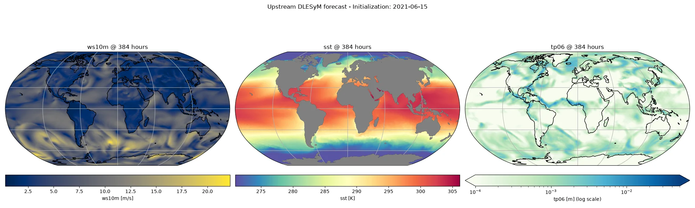

Running the DLESyM ISCCP-ERA5 Model¶
Coupled inference with the upstream DLESyM checkpoints, including precipitation.
This example demonstrates the upstream DLESyM model distributed by the
AtmosSci-DLESM/DLESyM group
(the University of Washington team behind Cresswell-Clay et al. 2024). It shares
the coupled atmosphere/ocean HEALPix architecture of the base
earth2studio.models.px.DLESyM model, but differs in a few ways that
are worth highlighting:
- The atmosphere carries an outgoing longwave radiation (OLR) channel. The model
was trained on ISCCP-distributed OLR, so the wrapper accepts ERA5
ttrand applies a per-day-of-year moment-matching transform to convert it to OLR internally (controlled by theuse_ttrflag). - A separate
earth2studio.models.dx.DLESyMv0_ISCCP_ERA5Precipdiagnostic predicts 6-hourly accumulated precipitation (tp06) from the full coupled state.
In this example you will learn:
- How to instantiate the upstream prognostic and precipitation models
- How the
ttr-> OLR transform shows up in the input/output variable sets - How to run a coupled forecast with the lat/lon convenience wrapper
- How to chain the precipitation diagnostic off the prognostic output
Set Up¶
As with the base DLESyM model, the upstream checkpoints run on a HEALPix
nside=64 grid internally and there are two ways to drive them:
- Use
earth2studio.models.px.DLESyMv0_ISCCP_ERA5LatLon. This variant accepts ERA5 inputs on the lat/lon grid, regrids them to HEALPix internally, and returns lat/lon outputs. This is the recommended entry point and is what we use throughout this example. - Use
earth2studio.models.px.DLESyMv0_ISCCP_ERA5directly with HEALPix inputs, handling the regridding and derived-variable preparation yourself (see the base DLESyM example for that lower-level pattern).
import os
os.makedirs("outputs", exist_ok=True)
from dotenv import load_dotenv
load_dotenv() # TODO: make common example prep function
import numpy as np
import torch
from earth2studio.data import ARCO
from earth2studio.data.utils import fetch_data
from earth2studio.models.dx import DLESyMv0_ISCCP_ERA5Precip
from earth2studio.models.px import DLESyMv0_ISCCP_ERA5LatLon
device = "cuda"
if not torch.cuda.is_available():
raise RuntimeError("GPU/CUDA required for DLESyM")
# Create the data source
data = ARCO()
# Load the coupled prognostic (lat/lon variant) and the precip diagnostic.
package = DLESyMv0_ISCCP_ERA5LatLon.load_default_package()
model = DLESyMv0_ISCCP_ERA5LatLon.load_model(package).to(device)
# The prognostic output is already in OLR space, so we load the precip
# diagnostic with ``use_ttr=False`` -- no further TTR -> OLR transform is needed
# when chaining off the model's own output. (Pass ``use_ttr=True`` to run the
# diagnostic standalone from an ERA5 initial condition instead.)
precip = DLESyMv0_ISCCP_ERA5Precip.load_model(package, use_ttr=False).to(device)
Console output61 lines
/__w/earth2studio/earth2studio/.venv/lib/python3.13/site-packages/torch/cuda/__init__.py:64: FutureWarning: The pynvml package is deprecated. Please install nvidia-ml-py instead. If you did not install pynvml directly, please report this to the maintainers of the package that installed pynvml for you.
import pynvml # type: ignore[import]
WARNING[XFORMERS]: xFormers can't load C++/CUDA extensions. xFormers was built for:
PyTorch 2.10.0+cu128 with CUDA 1208 (you have 2.13.0+cu130)
Python 3.10.19 (you have 3.13.13)
Please reinstall xformers (see https://github.com/facebookresearch/xformers#installing-xformers)
Memory-efficient attention, SwiGLU, sparse and more won't be available.
Set XFORMERS_MORE_DETAILS=1 for more details
CuPy distance computation test failed with error: cuVS >= 24.12 or pylibraft < 24.12 should be installed to use this feature
Downloading config.yaml: 0%| | 0.00/2.42k [00:00<?, ?B/s]
Downloading config.yaml: 100%|██████████| 2.42k/2.42k [00:00<00:00, 10.8kB/s]
Downloading config.yaml: 100%|██████████| 2.42k/2.42k [00:00<00:00, 10.7kB/s]
Downloading atmos_model_0.mdlus: 0%| | 0.00/13.4M [00:00<?, ?B/s]
Downloading atmos_model_0.mdlus: 74%|███████▍ | 10.0M/13.4M [00:00<00:00, 16.1MB/s]
Downloading atmos_model_0.mdlus: 100%|██████████| 13.4M/13.4M [00:00<00:00, 20.5MB/s]
Downloading ocean_model_0.mdlus: 0%| | 0.00/2.97M [00:00<?, ?B/s]
Downloading ocean_model_0.mdlus: 100%|██████████| 2.97M/2.97M [00:00<00:00, 7.13MB/s]
Downloading ocean_model_0.mdlus: 100%|██████████| 2.97M/2.97M [00:00<00:00, 7.01MB/s]
Downloading hpx_lat.npy: 0%| | 0.00/384k [00:00<?, ?B/s]
Downloading hpx_lat.npy: 100%|██████████| 384k/384k [00:00<00:00, 1.14MB/s]
Downloading hpx_lat.npy: 100%|██████████| 384k/384k [00:00<00:00, 1.13MB/s]
Downloading hpx_lon.npy: 0%| | 0.00/384k [00:00<?, ?B/s]
Downloading hpx_lon.npy: 100%|██████████| 384k/384k [00:00<00:00, 986kB/s]
Downloading hpx_lon.npy: 100%|██████████| 384k/384k [00:00<00:00, 977kB/s]
Downloading land_sea_mask.npy: 0%| | 0.00/192k [00:00<?, ?B/s]
Downloading land_sea_mask.npy: 100%|██████████| 192k/192k [00:00<00:00, 566kB/s]
Downloading land_sea_mask.npy: 100%|██████████| 192k/192k [00:00<00:00, 560kB/s]
Downloading topography.npy: 0%| | 0.00/192k [00:00<?, ?B/s]
Downloading topography.npy: 100%|██████████| 192k/192k [00:00<00:00, 629kB/s]
Downloading topography.npy: 100%|██████████| 192k/192k [00:00<00:00, 622kB/s]
Downloading era5_ttr_doy_stats_hpx64.nc: 0%| | 0.00/137M [00:00<?, ?B/s]
Downloading era5_ttr_doy_stats_hpx64.nc: 7%|▋ | 10.0M/137M [00:00<00:11, 11.9MB/s]
Downloading era5_ttr_doy_stats_hpx64.nc: 22%|██▏ | 30.0M/137M [00:01<00:03, 35.8MB/s]
Downloading era5_ttr_doy_stats_hpx64.nc: 36%|███▋ | 50.0M/137M [00:01<00:01, 57.2MB/s]
Downloading era5_ttr_doy_stats_hpx64.nc: 51%|█████ | 70.0M/137M [00:01<00:01, 65.9MB/s]
Downloading era5_ttr_doy_stats_hpx64.nc: 66%|██████▌ | 90.0M/137M [00:01<00:00, 77.6MB/s]
Downloading era5_ttr_doy_stats_hpx64.nc: 80%|████████ | 110M/137M [00:02<00:00, 69.4MB/s]
Downloading era5_ttr_doy_stats_hpx64.nc: 95%|█████████▍| 130M/137M [00:02<00:00, 61.4MB/s]
Downloading era5_ttr_doy_stats_hpx64.nc: 100%|██████████| 137M/137M [00:02<00:00, 57.4MB/s]
Downloading isccp_olr_doy_stats_hpx64.nc: 0%| | 0.00/137M [00:00<?, ?B/s]
Downloading isccp_olr_doy_stats_hpx64.nc: 7%|▋ | 10.0M/137M [00:00<00:10, 12.5MB/s]
Downloading isccp_olr_doy_stats_hpx64.nc: 22%|██▏ | 30.0M/137M [00:00<00:02, 38.1MB/s]
Downloading isccp_olr_doy_stats_hpx64.nc: 36%|███▋ | 50.0M/137M [00:01<00:01, 60.5MB/s]
Downloading isccp_olr_doy_stats_hpx64.nc: 51%|█████ | 70.0M/137M [00:01<00:00, 78.5MB/s]
Downloading isccp_olr_doy_stats_hpx64.nc: 66%|██████▌ | 90.0M/137M [00:01<00:00, 91.6MB/s]
Downloading isccp_olr_doy_stats_hpx64.nc: 80%|████████ | 110M/137M [00:01<00:00, 103MB/s]
Downloading isccp_olr_doy_stats_hpx64.nc: 95%|█████████▍| 130M/137M [00:01<00:00, 110MB/s]
Downloading isccp_olr_doy_stats_hpx64.nc: 100%|██████████| 137M/137M [00:01<00:00, 77.6MB/s]
Downloading precip_model_0.mdlus: 0%| | 0.00/5.45M [00:00<?, ?B/s]
Downloading precip_model_0.mdlus: 100%|██████████| 5.45M/5.45M [00:00<00:00, 11.3MB/s]
Downloading precip_model_0.mdlus: 100%|██████████| 5.45M/5.45M [00:00<00:00, 11.2MB/s]Inspecting the Variable Sets¶
Note that ttr appears in the prognostic input variables (the wrapper
converts it to OLR internally), while the output variables report rlut
(OLR) -- the model variable space. The precip diagnostic consumes the full
10-variable coupled state and emits a single tp06 field.
in_coords = model.input_coords()
out_coords_vars = model.output_coords(in_coords)["variable"]
print("Prognostic input variables: ", in_coords["variable"])
print("Prognostic output variables:", out_coords_vars)
print("Precip input variables: ", precip.input_coords()["variable"])
Console output6 lines
Prognostic input variables: ['z500' 'z1000' 't2m' 'tcwv' 't850' 'z250' 'ttr' 'sst' 'u10m' 'v10m'
'z300' 'z700']
Prognostic output variables: ['z500' 'tau300-700' 'z1000' 't2m' 'tcwv' 't850' 'z250' 'ws10m' 'rlut'
'sst']
Precip input variables: ['z500' 'tau300-700' 'z1000' 't2m' 'tcwv' 't850' 'z250' 'rlut' 'ws10m'
'sst']Making a Coupled Prediction¶
We fetch an ERA5 initial condition on the lat/lon grid and run the model
directly. As with the base DLESyM model, the atmosphere is predicted every
6 hours while the ocean only advances every 48 hours, so we use the
retrieve_valid_* helpers to select the valid lead times for each component.
ic_date = np.datetime64("2021-06-15")
x, coords = fetch_data(
source=data,
time=np.array([ic_date]),
variable=np.array(in_coords["variable"]),
lead_time=in_coords["lead_time"],
device=device,
)
# Run a single coupled step (lat/lon in, lat/lon out)
y, y_coords = model(x, coords)
y_atmos, y_atmos_coords = model.retrieve_valid_atmos_outputs(y, y_coords)
y_ocean, y_ocean_coords = model.retrieve_valid_ocean_outputs(y, y_coords)
print(
"Atmosphere outputs (variables, lead_time [hrs]):",
y_atmos_coords["variable"],
y_atmos_coords["lead_time"].astype("timedelta64[h]"),
)
print(
"Ocean outputs (variables, lead_time [hrs]):",
y_ocean_coords["variable"],
y_ocean_coords["lead_time"].astype("timedelta64[h]"),
)
Console output37 lines
Fetching ARCO data: 0%| | 0/8 [00:00<?, ?it/s]
Fetching ARCO data: 75%|███████▌ | 6/8 [00:00<00:00, 36.89it/s]
Fetching ARCO data: 100%|██████████| 8/8 [00:00<00:00, 22.66it/s]
Fetching ARCO data: 0%| | 0/8 [00:00<?, ?it/s]
Fetching ARCO data: 88%|████████▊ | 7/8 [00:00<00:00, 21.48it/s]
Fetching ARCO data: 100%|██████████| 8/8 [00:00<00:00, 24.38it/s]
Fetching ARCO data: 0%| | 0/8 [00:00<?, ?it/s]
Fetching ARCO data: 88%|████████▊ | 7/8 [00:00<00:00, 21.92it/s]
Fetching ARCO data: 100%|██████████| 8/8 [00:00<00:00, 24.43it/s]
Fetching ARCO data: 0%| | 0/8 [00:00<?, ?it/s]
Fetching ARCO data: 88%|████████▊ | 7/8 [00:00<00:00, 22.67it/s]
Fetching ARCO data: 100%|██████████| 8/8 [00:00<00:00, 25.70it/s]
Fetching ARCO data: 0%| | 0/8 [00:00<?, ?it/s]
Fetching ARCO data: 88%|████████▊ | 7/8 [00:00<00:00, 22.48it/s]
Fetching ARCO data: 100%|██████████| 8/8 [00:00<00:00, 24.74it/s]
Fetching ARCO data: 0%| | 0/8 [00:00<?, ?it/s]
Fetching ARCO data: 88%|████████▊ | 7/8 [00:00<00:00, 25.12it/s]
Fetching ARCO data: 100%|██████████| 8/8 [00:00<00:00, 25.23it/s]
Fetching ARCO data: 0%| | 0/8 [00:00<?, ?it/s]
Fetching ARCO data: 88%|████████▊ | 7/8 [00:00<00:00, 22.54it/s]
Fetching ARCO data: 100%|██████████| 8/8 [00:00<00:00, 25.22it/s]
Fetching ARCO data: 0%| | 0/8 [00:00<?, ?it/s]
Fetching ARCO data: 88%|████████▊ | 7/8 [00:00<00:00, 23.45it/s]
Fetching ARCO data: 100%|██████████| 8/8 [00:00<00:00, 26.61it/s]
Fetching ARCO data: 0%| | 0/8 [00:00<?, ?it/s]
Fetching ARCO data: 88%|████████▊ | 7/8 [00:00<00:00, 30.95it/s]
Fetching ARCO data: 100%|██████████| 8/8 [00:00<00:00, 30.39it/s]
Atmosphere outputs (variables, lead_time [hrs]): ['z500' 'tau300-700' 'z1000' 't2m' 'tcwv' 't850' 'z250' 'ws10m' 'rlut'] [ 6 12 18 24 30 36 42 48 54 60 66 72 78 84 90 96]
Ocean outputs (variables, lead_time [hrs]): ['sst'] [48 96]Rolling Out to a 16-Day Forecast¶
A single coupled step advances 96 hours (4 days), so to reach a 16-day lead time we roll the iterator forward four steps. The iterator yields the initial condition first, then one coupled step per iteration; we keep the final step and re-select the valid atmosphere/ocean outputs from it.
forecast_days = 16
hours_per_step = int(model.atmos_output_times[-1] / np.timedelta64(1, "h")) # 96h
n_steps = int(np.ceil(forecast_days * 24 / hours_per_step))
model_iter = model.create_iterator(x, coords)
next(model_iter) # initial condition
for _ in range(n_steps):
y, y_coords = next(model_iter)
y_atmos, y_atmos_coords = model.retrieve_valid_atmos_outputs(y, y_coords)
y_ocean, y_ocean_coords = model.retrieve_valid_ocean_outputs(y, y_coords)
print(
"Final forecast lead time:",
y_coords["lead_time"][-1].astype("timedelta64[h]"),
)
Console output1 line
Final forecast lead time: 384 hoursDiagnosing Precipitation¶
The precip diagnostic predicts 6-hourly accumulated precipitation from two
consecutive 6-hourly atmosphere timesteps of the full coupled state. The
16-day prognostic output y already contains exactly the 10 coupled
variables the diagnostic expects (in OLR / rlut space), so we take its
last two atmosphere lead times as the [-6, 0] history window and regrid
them onto the HEALPix grid using the prognostic's regridding helpers.
# The prognostic output carries the coupled variables in the prognostic's
# channel order, which differs from the order the precip diagnostic expects
# (e.g. ``ws10m`` and ``rlut`` are swapped). Reorder the variable axis to match
# the diagnostic's input variables before feeding it.
precip_vars = list(precip.input_coords()["variable"])
y_vars = list(y_coords["variable"])
var_order = [y_vars.index(v) for v in precip_vars]
# Last two atmosphere lead times form the [-6h, 0h] window relative to the
# diagnosed valid time; relative spacing is what the diagnostic validates.
precip_in = y[:, -2:][:, :, var_order]
precip_coords = y_coords.copy()
precip_coords["lead_time"] = y_coords["lead_time"][-2:]
precip_coords["variable"] = np.array(precip_vars)
# Regrid the coupled state onto HEALPix using the prognostic's regridder
precip_in_hpx = model.to_hpx(precip_in)
precip_coords_hpx = model.coords_to_hpx(precip_coords)
tp, tp_coords = precip(precip_in_hpx, precip_coords_hpx)
# Regrid the precip output back to lat/lon for plotting
tp_ll = model.to_ll(tp)
print(
"Precip output (variable, valid lead_time [hrs]):",
tp_coords["variable"],
tp_coords["lead_time"].astype("timedelta64[h]"),
)
Console output1 line
Precip output (variable, valid lead_time [hrs]): ['tp06'] [384]Plotting the Outputs¶
We plot a forecasted atmosphere field, the ocean SST, and the diagnosed precipitation.
import cartopy.crs as ccrs
import cartopy.feature as cfeature
import matplotlib.pyplot as plt
from matplotlib.colors import LogNorm
lat = y_coords["lat"]
lon = y_coords["lon"]
atmos_var, atmos_units = "ws10m", "m/s"
ocean_var, ocean_units = "sst", "K"
atmos_idx = list(y_atmos_coords["variable"]).index(atmos_var)
ocean_idx = list(y_ocean_coords["variable"]).index(ocean_var)
plt.close("all")
projection = ccrs.Robinson()
fig, axs = plt.subplots(1, 3, subplot_kw={"projection": projection}, figsize=(20, 6))
# Atmosphere: 10m wind speed at the final atmos lead time
atmos_lead = y_atmos_coords["lead_time"][-1]
im = axs[0].pcolormesh(
lon,
lat,
y_atmos[0, -1, atmos_idx].cpu().numpy(),
transform=ccrs.PlateCarree(),
cmap="cividis",
)
axs[0].set_title(f"{atmos_var} @ {atmos_lead.astype('timedelta64[h]')}")
axs[0].coastlines()
axs[0].gridlines()
cbar = fig.colorbar(im, ax=axs[0], orientation="horizontal", pad=0.05)
cbar.set_label(f"{atmos_var} [{atmos_units}]")
# Ocean: SST at the final ocean lead time
ocean_lead = y_ocean_coords["lead_time"][-1]
im = axs[1].pcolormesh(
lon,
lat,
y_ocean[0, -1, ocean_idx].cpu().numpy(),
transform=ccrs.PlateCarree(),
cmap="Spectral_r",
)
axs[1].set_title(f"{ocean_var} @ {ocean_lead.astype('timedelta64[h]')}")
axs[1].add_feature(cfeature.LAND, color="grey", zorder=100)
axs[1].coastlines()
axs[1].gridlines()
cbar = fig.colorbar(im, ax=axs[1], orientation="horizontal", pad=0.05)
cbar.set_label(f"{ocean_var} [{ocean_units}]")
# Precip: 6-hourly accumulated precipitation on a log color scale. We pin the
# color range to a fixed physical window (0.1 mm .. 50 mm per 6 h) rather than
# auto-scaling: the log-precip inverse transform can produce a handful of
# grid-scale outliers, and an auto-scaled norm would chase those and wash out
# the real field. Values are clipped into the window for display only.
precip_lead = tp_coords["lead_time"][-1]
precip_field = np.clip(tp_ll[0, 0, 0].cpu().numpy(), 0.0, None)
vmin, vmax = 1e-4, 5e-2 # metres of accumulated precip over 6 h
im = axs[2].pcolormesh(
lon,
lat,
np.clip(precip_field, vmin, vmax),
transform=ccrs.PlateCarree(),
cmap="GnBu",
norm=LogNorm(vmin=vmin, vmax=vmax),
)
axs[2].set_title(f"tp06 @ {precip_lead.astype('timedelta64[h]')}")
axs[2].coastlines()
axs[2].gridlines()
cbar = fig.colorbar(im, ax=axs[2], orientation="horizontal", pad=0.05, extend="both")
cbar.set_label("tp06 [m] (log scale)")
plt.suptitle(f"Upstream DLESyM forecast - Initialization: {ic_date}")
plt.tight_layout()
plt.savefig("outputs/03_dlesym_climate_prediction.png")
